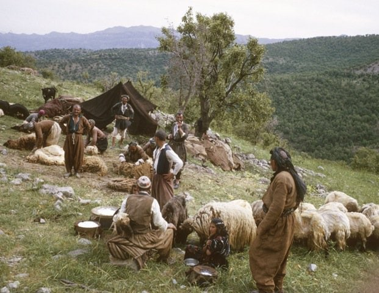

We revitalize thousands of years of Kurdish culture, deep-rooted oral literature, unique handicrafts, and historical chronology in the digital world. Join us on this journey to leave a mark on the future, discover a rich heritage, and introduce these values to the world.


"Heritage of the Kurds" app transmits cultural heritage to the future through three main pillars.
Kurdish history through the ages. Verified data archive with map integrations, historical documents, and academic publications.
Codes of traditional motifs (Deq), meanings of rug patterns, folkloric clothes, and digital replicas of endangered handicrafts.
From Mem û Zîn to Siyabend û Xecê, classical epics, audio archives of dengbêj tradition, and interactive mythological storytelling.
Carry cultural memory in your pocket. Fully compatible with all iOS and Android devices.